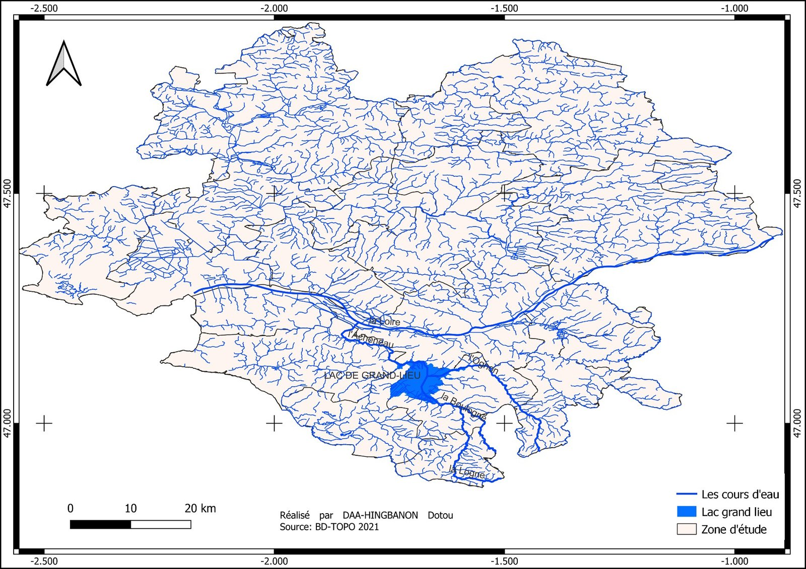
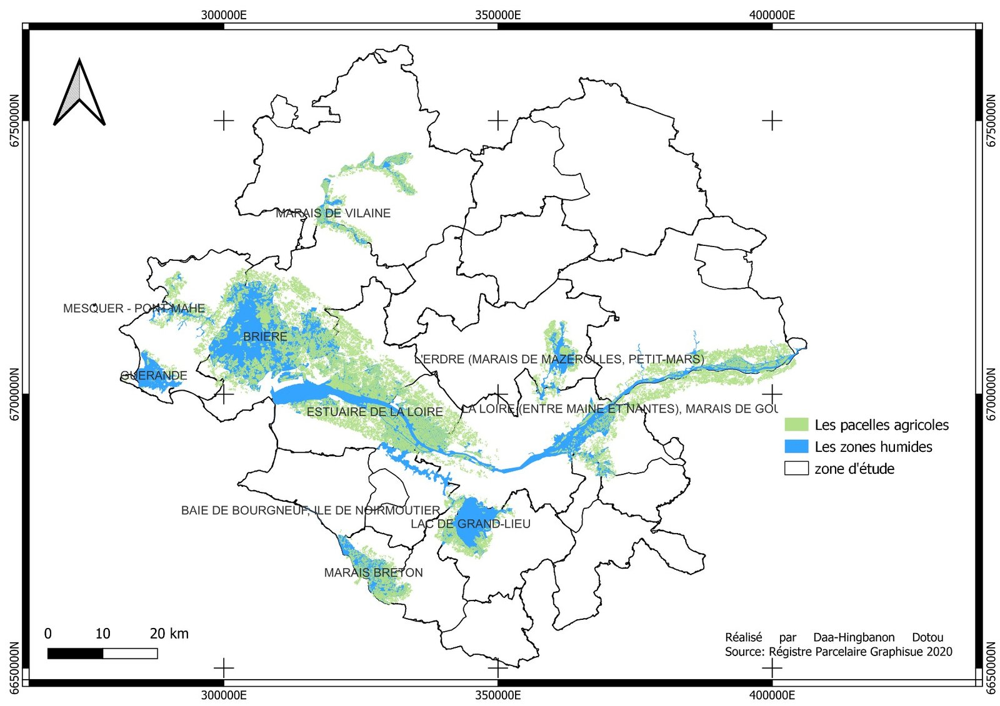

Géomatique, Limnologie, Environnement et Territoire · Université d'Orléans · 2022-2023
Étude du lac de Grand-Lieu
Plan d'eau et contexte sociologique
Contexte et objectif
Ce travail propose une synthèse bibliographique et cartographique du lac de Grand-Lieu (Loire-Atlantique), le plus grand lac naturel de plaine de France. L'objectif est de caractériser ce plan d'eau à la fois sur le plan environnemental et sur le plan socio-économique et culturel, puis de le replacer dans son contexte territorial plus large : bassin versant, réseau hydrographique et usages agricoles du département de la Loire-Atlantique.
Démarche et outils
Le travail s'appuie sur une revue de la littérature scientifique et institutionnelle (SNPN, Natura 2000, SAGE Logne-Boulogne-Ognon-Grand-Lieu, publications universitaires) combinée à la production de cartes sous SIG : carte de situation géographique, carte du réseau hydrographique du bassin de Grand-Lieu et carte des zones agricoles et zones humides du territoire.


Résultats
L'analyse met en évidence un lac au fonctionnement hydrologique atypique — faible profondeur (0,70 à 1,20 m en été), forte variation saisonnière de superficie (4 000 à 6 300 ha) — placé sous statut de protection (réserve naturelle nationale et régionale) mais soumis à de fortes pressions anthropiques, en particulier agricoles, qui pèsent sur la qualité de l'eau et la biodiversité de l'ensemble du bassin versant.